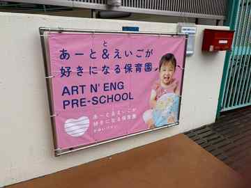

設置は一度でOK
フレームはそのまま。何度でも使えます。
一度つくったパイプフレームはそのまま。季節・イベント・キャンペーンごとに、バナーだけを交換する新しい看板のかたちです。

季節・イベントに合わせて
カンタン着せ替えフレームはそのまま。何度でも使えます。
ハトメと結束材で、バナーだけを交換。
必要部材をまとめて、通販で全国発送。
壁・フェンス・門扉・外壁などに対応。
毎回つくり直さず、広告だけを刷新。
USE CASE
いかにも「看板」になりすぎない、ラフで少しインダストリアルな見せ方が特徴です。
SIZE KIT
フレーム・ジョイント・固定部材・取扱説明書をセットにした材料キットを想定しています。
W 900 × H 1200 mm
門扉や小さめの壁面、限られたスペースに。
W 1200 × H 1800 mm
店舗・園・事務所に。視認性と扱いやすさのバランスが良い定番。
W 1800 × H 1800 mm
外壁・工場・大きなフェンスなど、遠目の視認性を重視する場所に。
KIT CONTENTS
難しい仕組みはありません。必要な部材をまとめてキット化し、施工方法が分かる説明書を同梱します。
フレームはそのまま。
バナーだけを交換。
REAL INSTALLATION
保育園の季節バナーから、中古重機・店舗告知まで。グラフィック次第で印象は大きく変わります。




HOW TO ORDER
設置場所に合う標準サイズ、または特注サイズを選択。
オンラインで材料キットを注文。全国へ発送。
説明書を見ながらフレームを組み、設置場所に固定。
季節やキャンペーンごとにバナーだけを差し替え。
FAQ
はい。フレーム設置後は、バナーだけの追加注文を想定しています。
屋外使用を想定しています。ただし設置面・風圧・固定方法など、現場条件の確認が必要です。
小型サイズはDIY設置も想定しています。大型・高所・風の強い場所は専門業者への依頼を推奨します。
はい。材料キットとは別に、入稿データからのバナー印刷オプションを想定しています。